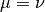
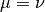

Generic 7: SI - Lifelong infection¶
This tutorial assumes that you have read Generic 6: SEIRS - Disease-specific mortality and endemics.
This tutorial demonstrates how to configure an SI model and vary EMOD input parameters to observe the effect on the disease.
The SI model is the simplest form of all disease models. Individuals are born into the simulation with no immunity (susceptible). Once infected and with no treatment, individuals stay infected and infectious throughout their life, and remain in contact with the susceptible population. This model matches the behavior of diseases like cytomegalovirus (CMV) or herpes.
If S and I represent the number of susceptible and infected individuals, and  is the total population. The infectious rate
is the total population. The infectious rate  controls the spread.
controls the spread.
The SI model can be written as follows:

The dynamics of I are also known as logistic growth. If there are no vital processes (birth and death), every susceptible will eventually become infected.
Let  and
and  represent the birth and death rates, respectively, for the model. To
maintain a constant population, assume that . Therefore, the model becomes:
represent the birth and death rates, respectively, for the model. To
maintain a constant population, assume that . Therefore, the model becomes:

In steady state  and given that
and given that  , the final proportion of infected people is related to both the
vital dynamics and .
, the final proportion of infected people is related to both the
vital dynamics and .
Demographics inputs¶
This tutorial uses generic_scenarios_demographics file for demographics input. You can view the complete demographics file at <path_to_directory>ScenariosInputFiles where <path_to_directory> is the location where you installed either the Quick Start. For more information on demographics files, see Demographics file structure and parameters.
Key configuration parameters¶
This tutorial simulates the person-to-person disease transmission of an SI model in a hypothetical community for more than a 100 year period.
You can view the complete config.json at <path_to_directory>ScenariosGeneric07_SI directory.
Demographics parameters¶
The following parameter enables vital dynamics (birth and death) in the simulation.
Set the following parameters:
- Set Enable_Vital_Dynamics to 1.
- Set Enable_Birth to 1.
- Set Death_Rate_Dependence to “NONDISEASE_MORTALITY_BY_AGE_AND_GENDER.”
SI model setup parameters¶
The EMOD generic simulation uses an SEIR model by default. However, it can be modified to an SI model with the following configurations. For more information, see General disease parameters.
Set the following parameters:
- Set Base_Incubation_Period to 0.
- Set Base_Infectious_Period to 50000.
- Set Incubation_Period_Distribution to “FIXED_DURATION.”
- Set Infectious_Period_Distribution to “FIXED_DURATION.”
Disease parameters¶
As demonstrated previously, the spread of disease in the SI model depends on β, the base infectivity, and, for simplicity, assume the infectivity stays constant over time.
Assume that the anticipated final epidemic size,  , is 85%, and the birth/death rate equals 0.0000548 per day (2% per year). can be calculated by looking at the steady state:
, is 85%, and the birth/death rate equals 0.0000548 per day (2% per year). can be calculated by looking at the steady state:

and =0.00003653.
Set the following parameters:
- Set Base_Infectivity to 0.00003653.
Simulation time parameters¶
The simulation runs for 100 years. Because the disease dynamics are slow, the larger time step speeds up the simulation.
Set the following parameters:
- Set Simulation_Timestep to 1.
- Set Simulation_Duration to 36500.
Interventions¶
Initial outbreak¶
This simulation uses an OutbreakIndividual event at day 30 for the initial seeding. For more information, see OutbreakIndividual parameters.
{
"Use_Defaults": 1,
"Campaign_Name": "Initial Seeding",
"Events": [{
"Event_Coordinator_Config": {
"Intervention_Config": {
"Antigen": 0,
"Genome": 0,
"Outbreak_Source": "PrevalenceIncrease",
"class": "OutbreakIndividual"
},
"Target_Demographic": "Everyone",
"Demographic_Coverage": 0.05,
"class": "StandardInterventionDistributionEventCoordinator"
},
"Event_Name": "Outbreak",
"Nodeset_Config": {
"class": "NodeSetAll"
},
"Start_Day": 30,
"class": "CampaignEvent"
}]
}
You can view the complete campaign.json at <path_to_directory>ScenariosGeneric07_SI directory.
Run the simulation¶
Run the simulation and generate graphs of the simulation output. For more information, see How to run Quick Start simulations.
Note
Because the EMOD model is stochastic, your graphs may appear slightly different from those given below.
Simulation output graphs¶
Figure 1: Outbreak reaching steady-state shows the growth of an outbreak over time and eventually approaching steady state. Notice that the fraction of infected people at steady state approaches the anticipated value of 85%.

Figure 1: Outbreak reaching steady-state
Exploring the model¶
You can change the Base_Infectivity in the config.json file and the birth and death rates in the demographics file to have a different fraction of infected value at steady state.
If you want to change vital dynamics without updating the demographics file, disable vital dynamics in the configuration file (Enable_Vital_Dynamics = 0). There will be no births in the simulation and eventually everyone becomes infected. The following output shows the result without vital dynamics.

Figure 2: No vital dynamics